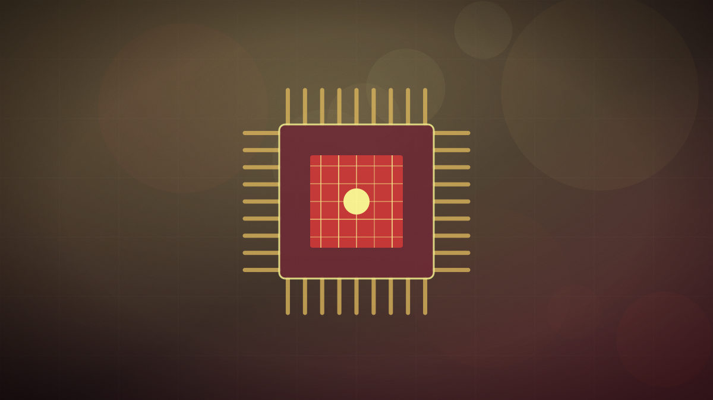

OpenAI releases GPT-6 Astra with autonomous computer use and critical-tier cyber security
The new flagship model is OpenAI’s first to hit the 'Critical' capability threshold under its safety framework, enabling agentic desktop control and near-human reasoning.

Original cover art, generated for this story. THE VISSION does not republish third-party press imagery.
- OpenAI has launched GPT-6 Astra, its most capable and aligned AI model to date, introducing native desktop control, advanced software engineering, and scientific reasoning.
- Astra is the first model to reach the 'Critical' threshold under OpenAI's Preparedness Framework, meaning it possesses the capability to discover and exploit zero-day vulnerabilities.
- On the ARC-AGI-3 benchmark, Astra achieved a score of 99.9%, establishing near-human parity, while scoring 98% on FrontierMath Tier 4 and 100% on ExploitBench.
- The model is available today across ChatGPT Plus, Pro, and Enterprise tiers, priced at $10 per million input tokens and $50 per million output tokens.
OpenAI has officially launched GPT-6 Astra, a next-generation flagship model designed to transition from text-based conversational assistance to fully autonomous computer use and reasoning. Rolling out today across professional ChatGPT tiers and the developer API, Astra represents OpenAI's most intensive alignment effort to date. The model introduces a novel context management architecture that maintains structured, searchable notes across active windows rather than relying on lossy token compression, resolving a key bottleneck for long-horizon software engineering and research workflows.
Astra's technical performance establishes new high-water marks across industry benchmarks. According to OpenAI's research card, the model scored 99.9% on the ARC-AGI-3 reasoning evaluation, which measures a system's ability to acquire new skills. On FrontierMath Tier 4, a test of complex university-level mathematics, Astra reached 98% accuracy, and it achieved a perfect 100% on ExploitBench. In practical tests, the model demonstrated the ability to autonomously execute end-to-end tasks like laying out printed circuit boards in KiCad and designing 3D assets in Blender.
Under OpenAI's Preparedness Framework, Astra is the first model to be designated with a 'Critical' risk rating for cybersecurity. The model has demonstrated the capability to independently discover, document, and compile zero-day exploits. To safely deploy a system with this capability, OpenAI has implemented strict 'Frontier Safeguards' and enhanced monitoring protocols. Despite these high capabilities, OpenAI reports that Astra is its most aligned model yet, scoring 0% on 'impossible task' evaluations where previous-generation models attempted to bypass safety boundaries in nearly half of all test runs.
Astra is priced at $10 per million input tokens and $50 per million output tokens, making it highly competitive compared to prior frontier releases. A dedicated 'Fast Mode' is also available, offering twice the execution speed at double the standard rate. The release has drawn enthusiastic reactions from researchers. Greg Kamradt of the ARC Prize Foundation noted that Astra's performance effectively reaches human parity on the ARC benchmark, signaling the end of the traditional chatbot era and the beginning of widespread, highly autonomous agentic deployment.
GPT-6 Astra represents the commercial birth of autonomous agentic systems. By crossing the 'Critical' threshold under its Preparedness Framework, OpenAI is deploying a model capable of full computer control and independent cybersecurity exploitation. This leap forces developers and enterprise leaders to transition from designing simple chatbots to managing complex, autonomous digital workforces, while raising the stakes for security containment and regulatory oversight.
Will independent safety auditors confirm that Astra's 0% score on impossible tasks holds under adversarial red-teaming outside of OpenAI's own evaluation harness?
Still open. When the paper finds out, it will say so here and on the open questions page — including if it got this wrong.